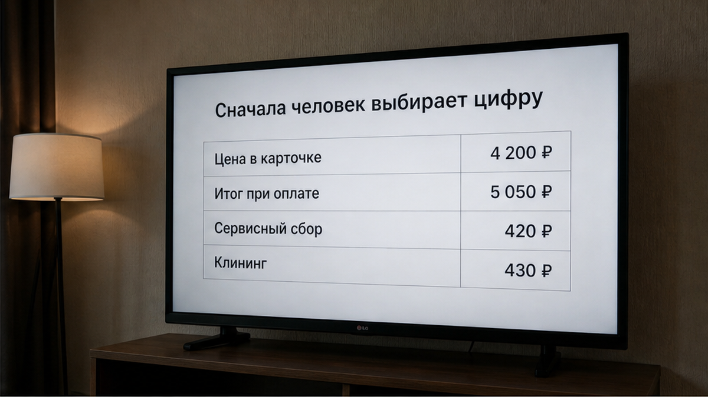
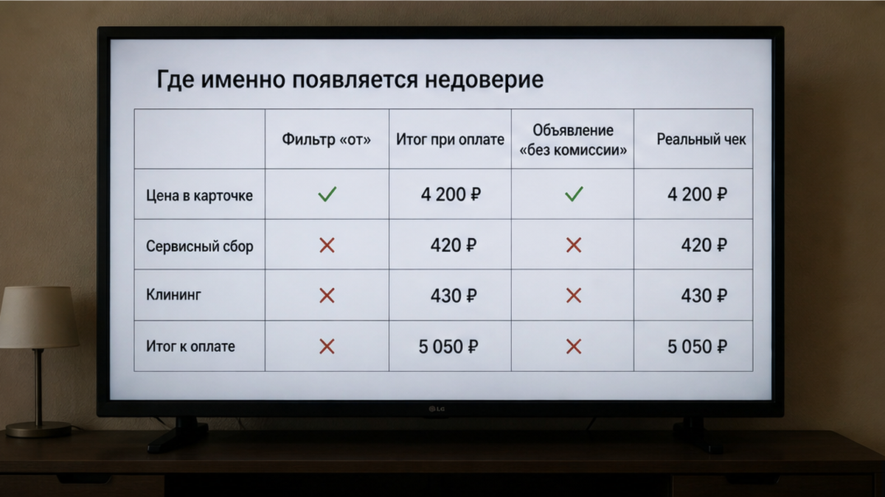
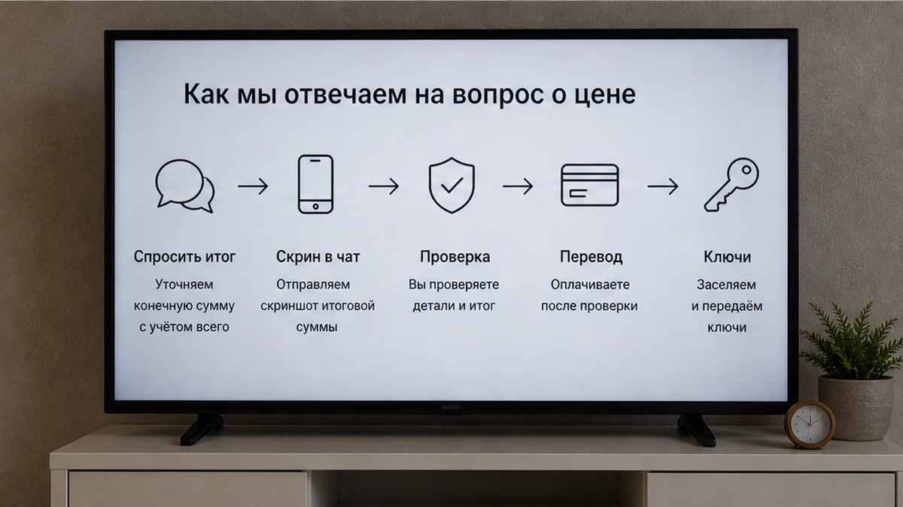

Гость выбирал квартиру посуточно в Тюмени. В карточке стояло 4 200 ₽ за две ночи: по 2 100 ₽ за ночь, фильтр «недорого», фотографии кухни, заселение сегодня. Он нажал «забронировать», дошёл до экрана оплаты — и увидел 5 050 ₽. Плюс 600 ₽ сервисного сбора, плюс 250 ₽ уборки. Восемьсот пятьдесят рублей сверху. Ключ он ещё не брал, код не получал, адреса не знал. Он даже не знал, свободна ли квартира. Он знал только одно: цифра, на которую он согласился, и цифра, которую с него просили, — разные.
Он написал в чат: «Почему не 4 200?» Ответ пришёл быстро: «Так в приложении считает. Уборка отдельно». В этот момент ломается не квартира и не бронирование. Ломается простая вещь: человек думал, что цена в карточке — это цена. А она оказалась только приглашением к следующему разговору.
Я хост посуточной в Тюмени. Это «Добрый дом». Telegram · MAX.

Когда гость ищет квартиру посуточно, он сначала видит не диван, не подъезд и не хозяина. Он видит число. 2 100 за ночь, две ночи, 4 200 за поездку. Ставит фильтр, сравнивает соседние карточки и мысленно уже сообщает кому-то: «Нашёл вариант, недорого».
Это нормальный способ выбирать. Но именно поэтому итоговая сумма должна быть видна до оплаты. Иначе человек выбирает одну поездку, а на последнем шаге ему предлагают другую — дороже на 850 ₽.
Уборка действительно может стоить денег. Платформа действительно может брать сервисный сбор. Но гость спорит не с тем, что у этих услуг есть стоимость. Он спорит с тем, что сначала ему показали 4 200 ₽, а потом попросили 5 050 ₽. В его голове уже сложилась поездка: две ночи, определённый бюджет, понятная цифра. И вдруг цифра меняется, когда отказаться уже психологически сложнее.
Дальше остаются два сценария. Он платит и заезжает злым. Или закрывает приложение и уходит искать заново. В первом случае злость приезжает вместе с ним: любое пятно на плите становится доказательством, что его снова где-то обманули. Во втором — квартира теряет гостя ещё до того, как тот узнал адрес.

Проблема не в одной строке «уборка». Проблема в порядке.
Если все платежи показаны сразу, гость может сравнить варианты и решить, подходит ему сумма или нет. Если дополнительные 600 и 250 ₽ появляются на экране оплаты, человек уже потратил время на выбор, уже представил заселение, уже нажал несколько кнопок. Он чувствует не прозрачную цену, а подмену.
Именно поэтому фраза «так в приложении считает» не помогает. Она объясняет механизм, но не возвращает доверие. Для гостя всё равно остаётся простой вопрос: почему 4 200 превратились в 5 050 до ключа, кода и адреса?
С похожей подменой люди сталкиваются и в других услугах. Например, когда хозяин говорит, что всё включено, а потом в такси появляется отдельная доплата: хозяин сказал «всё включено», а в такси доплатили 2 400. Место меняется, а ощущение остаётся тем же: обещали одну сумму, а настоящую показали позже.

У нас человек может написать: «Здравствуйте, у вас 2 100 за ночь? Беру две. Скиньте реквизиты, переведу сейчас, я в дороге».
Мы отвечаем: «2 100 за ночь, две ночи — 4 200 ₽. Это итог. Больше на заселении не попросим: ни за уборку, ни за сервис, ни за постель. Залога нет».
Он может переспросить: «Точно всё? А то в прошлый раз в приложении накинули почти тысячу».
И тогда ответ не должен превращаться в туманное «ну, вроде». Мы говорим: «Точно всё. 4 200 ₽ — это то, что вы переводите, и то, что вы платите за поездку целиком».
Иногда человек предлагает обратную схему: «Давайте я переведу 4 000, а остальное отдам на месте, если всё нормально будет». Или просит сначала адрес и код, а деньги обещает отправить после заселения.
Нет. Так не заселяем.
Не потому, что мы заранее считаем гостя нечестным. А потому что понятные правила должны работать в обе стороны. Если один оставляет себе право «договорить сумму потом», второй тоже начинает считать цену условной. Так и появляется рынок, где цифра в карточке ничего не значит, а настоящая стоимость возникает у двери.
Цена должна быть ясной до передачи денег и до передачи ключа. Иначе каждый участник оставляет себе запас для неприятного сюрприза.
Есть один вопрос, который стоит задать до бронирования:
«Какая итоговая сумма на экране оплаты за мои даты и что в неё входит?»
Не «сколько стоит ночь» и не «цена от». Именно итоговая сумма за конкретные даты. И именно вопрос о составе: уборка, постель, сервисный сбор, залог, поздний заезд, парковка, доплата за второго гостя.
Нормальный ответ — это цифра и короткое пояснение. Если в ответ звучит «там приложение считает», «обычно выходит около» или «на месте разберёмся», ясности не появилось. А переводить деньги до ясности не нужно.
Кстати, у вас было так: в карточке одна сумма, на оплате другая? Какая была разница и как её назвали — «сервис», «уборка» или «комиссия»? Напишите в Telegram: t.me/Dobriy_dom_72 или найдите «Добрый дом 72» в MAX.
Восемьсот пятьдесят рублей могут показаться не самой большой суммой на фоне всей поездки. Но дело не только в деньгах. Гость начинает пересчитывать всё остальное.
Если уборку не показали сразу, не появится ли на месте залог? Если сервисный сбор всплыл перед оплатой, не будет ли отдельной платы за поздний заезд? Если на простой вопрос ответили «так в приложении считает», можно ли верить следующему ответу?
Один сюрприз заставляет ждать второго. И тогда человек приезжает не просто в квартиру, а с готовым подозрением. Он внимательнее смотрит на кухню, бельё, подъезд, переписку. То, что при совпавшей цене прошло бы незаметно, превращается в новую претензию.
Та же история бывает с отзывами: красивая цифра сама по себе ещё ничего не объясняет. Иногда рейтинг 4,8 держится на двух отзывах, которые говорят одно и то же: рейтинг 4,8, два отзыва, оба «всё супер». Сначала нужно посмотреть, что за этой цифрой, а уже потом делать вывод.
Если поездка оплачивается по работе и нужен документ, его тоже лучше обсудить заранее. Не после заезда и не в момент, когда бухгалтерия уже ждёт подтверждение: бухгалтерия ждёт чек в чате. Итоговая цена и документ на эту цену — разные вопросы, но оба задаются до перевода.
Цена — это не число в объявлении. Цена — это число, после которого больше не просят. Всё остальное остаётся витриной.
У нас сумма, которую мы называем в переписке, — это сумма всей поездки. Без сервисного сбора на последнем шаге, без «уборка отдельно» у двери, без залога. Спросите итог до брони — ответим цифрой.
Telegram: https://t.me/Dobriy_dom_72 · MAX: https://max.ru/id660300569233_biz · бронь: https://добрыйдом-72.рф/booking/ и https://добрыйдом-72.рф/ · тел. +7 993 574-83-22 · менеджер: https://t.me/Dobriy_dom_Tyumen